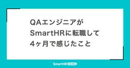
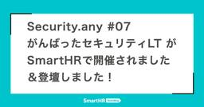
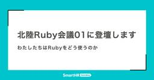
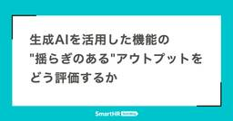

SmartHR Tech Blog
https://tech.smarthr.jp/
SmartHR 開発者ブログ
フィード

QAエンジニアがSmartHRに転職して4ヶ月で感じたこと 1
1
SmartHR Tech Blog
はじめに こんにちは、SmartHRでQAエンジニアを務めている山下です。 2025年8月にSmartHRに入社しました。 この記事を書きながら、入社日の翌日にXにポストした内容が過去一番のいいね数と閲覧数で、入社早々にびっくりしたことを思い出しました。 私は品質保証本部の労務プロダクト品質保証部の労務ユニットAに配属されています。 この記事では、入社してから4ヶ月間でチームに参加して感じたこと、良かった点や改善の余地がある点について書きます。 品質保証本部の組織に関しては品質保証部から品質保証本部へ - 労務QA体制アップデートの背景とこれから をご参照ください。 良かった点 私がチームに参…
1日前

「Security.any #07 がんばったセキュリティLT」がSmartHRで開催されました＆登壇しました！
SmartHR Tech Blog
こんにちは！SmartHRでプロダクトエンジニアをしているa2cです！ 2025年11月25日に「Security.any #07 がんばったセキュリティLT」が開催されました。今回はSmartHRが会場となり、折角の機会なのでスポンサーLTとして登壇の機会をいただくことになりました。 本レポートでは、当日のイベントの雰囲気と、私が発表した「ID管理機能開発の裏側：高速にSaaS連携を実現したチームのAI活用編」について簡単にご紹介します。 Security.anyとは 主催者の方のオープニング Security.anyは、セキュリティに関心を持つエンジニアが集まるコミュニティです。隔月ごとに…
1日前

北陸Ruby会議01に登壇します ── わたしたちはRubyをどう使うのか 1
SmartHR Tech Blog
2025年12月6日(土)に、石川県立図書館で開催される「北陸Ruby会議01」にSmartHRから@ydahと@pndcatが登壇します！ 北陸Ruby会議01とは 北陸Ruby会議01のテーマは、「みんなの Ruby の使い方」です。 発表者・参加者のいろいろな Ruby の使い方の事例を紹介しあうことで、北陸における Ruby の活用の幅を広げ、Ruby を利活用する人口を増やしたいという思いで開催されます。 発表内容としてはRuby を使って作ったものや企業での Ruby の利用事例など、幅広い Ruby の使い方が紹介される予定です。 regional.rubykaigi.org 登…
2日前

生成AIを活用した機能の"揺らぎのある"アウトプットをどう評価するか 2
SmartHR Tech Blog
こんにちは！SmartHRのタレントマネジメントプロダクト開発本部で PdE（Product Development Engineer）を務めるhoriyu、PdM（Product Manager）のabeto、QA（Quality Assurance）の3kiです。最近、急に寒くなりましたね。この記事は暖かいところで読んでください。 この記事を読んでくださっている皆さまは、生成AIと触れる機会が多いのではないかと思います。開発プロセスの改善だったり、開発しているアプリケーションの機能に組み込んだり様々な機会がありそうですね。 今回は、SmartHRの「HRアナリティクス機能」に生成AIを使っ…
3日前

SmartHRに入社した理由と実際に働いてみて感じたこと —— ydahの場合 13
SmartHR Tech Blog
はじめまして、ydahです。読み方が分かりづらいIDですが、「わいだー」と読みます。私は2025年11月にSmartHRに入社しました。 今はプロダクトエンジニアとして、SmartHRの外部サービス連携基盤を開発しています。 私はRubyというプログラミング言語や、Ruby周辺で育まれているコミュニティが大好きです。生まれも育ちも大阪で、Kyobashi.rbという大阪の京橋を拠点にしたRubyコミュニティの主催もしています。 2024年からは大阪Ruby会議や関西Ruby会議のチーフオーガナイザーを務めています。 趣味としてオープンソースソフトウェアの開発を行っており、Rubyコミッター、R…
4日前
YAPC::Fukuoka 2025レポート —— 6人が現地参加、3人が登壇、1人が運営 1
SmartHR Tech Blog
SmartHRは、2025年11月14日、15日に福岡工業大学で開催された「YAPC::Fukuoka 2025」にブロンズおよびU29支援スポンサーとして協賛し、6名が現地参加、3名が登壇、1名が運営に携わりました。 会場の福岡工業大学 目次 目次 登壇 ゲストトーク「ある編集者のこれまでとこれから —— 開発者コミュニティと歩んだ四半世紀」（inao） 踊り場企画「ゲストゲストトーク」（ホスト：inao） スポンサートーク「「文字列→日付」の落とし穴 〜Ruby Date.parseの意外な挙動〜」（tanayu） LT「Binary "pack" Rebooted in Perl 〜Ru…
4日前

未来へレバレッジをかけるためのレバレッジ推進ユニットの役割と今
SmartHR Tech Blog
未来へレバレッジをかけるためのレバレッジ推進ユニットの役割と今 こんにちは、SmartHR 品質保証本部のtarappoです。 次のテックブログに記載したとおり、品質保証本部では2025年1月から「レバレッジ推進ユニット」というユニットを組成し、活動をしています。 このユニットは、特定のプロダクトを担当せず、SmartHR全体の品質向上に貢献するために、レバレッジをかけられる領域にフォーカスする、というミッションを持っています。 この記事では、レバレッジ推進ユニットの活動の軸となっている「0.n → 1」への支援についてご紹介します。 これは、まだQA視点を届けられていない領域に対し、その価値…
10日前
新卒エンジニアとして入社したSmartHR。実際どうなん？
SmartHR Tech Blog
おはようございます！！こんにちは！！こんばんは！！ SmartHR 新卒 0 期生（2025 年 4 月入社）、プロダクトエンジニアの AzuKi です。 現在は、組織図、従業員サーベイ、配置シミュレーションの開発を担当するチームに所属しています。 2025 年 4 月に入社して約半年、その前の学生アルバイト期間も合わせると、SmartHR には約 1 年間（！）お世話になっています。 なぜ、今、この記事を書くのか 私自身が就活を始めた大学 3 年生の冬頃、大きな不安を感じていました。当時、「新卒で SmartHR ってどうなの？」といった疑問に答えられる情報が欲しくて仕方ありませんでした。 …
11日前
第13回SmartHR LT大会レポート ── 技術を深め、知見を広げ、次世代を育てる
SmartHR Tech Blog
こんにちは、SmartHRで基本機能を開発しているNGT（ながた）です。 この記事では、2025年10月17日に開催した第13回SmartHR LT大会の模様を、shimoさん・HIGUCHI.Takashiさんと共にお届けします。 今回は、教える側も学ぶ側も、技術の奥深さも幅広さも味わえる、バラエティ豊かなLT大会となりました。 目次 目次 SmartHR LT大会とは 参加者情報 誕生。SmartHR LT大会限定の増えてくアクキー 発表レポート Gitのおしえかた バジェットを無視してオブザーバビリティ基盤を作ってみた 『PRDを完全に理解した』 という発表をしたかったんじゃ… Smar…
13日前
事業成長を支える"開発の土台"をつくる。——SmartHR プロダクト基盤開発本部の取り組み
SmartHR Tech Blog
こんにちは。SmartHR プロダクト基盤開発本部の平石(hiraishi)です。今回はプロダクト基盤開発本部の各ユニットについて紹介させてください。 目次 目次 プロダクト基盤開発本部とは ミッション 役割と面白さ 権限基盤チーム —— Policy-as-Codeで実現するアクセス制御 取り組んでいること 今後の挑戦 課金基盤チーム —— 柔軟な課金体系への刷新 取り組んでいる課題 今後の挑戦 共通データ基盤チーム —— 従業員データの履歴管理と柔軟な拡張 取り組んでいること 今後の挑戦 データ集約・活用API基盤チーム —— プロダクト横断データ統合の実現 取り組んでいること 今後の挑戦…
15日前
完璧を求めない意思決定 —— アクセス制御基盤における制約との向き合い方
SmartHR Tech Blog
こんにちは。SmartHRでプロダクトエンジニアをしている@bmf_sanです。 SmartHRはマルチプロダクト戦略を推進していますが、「誰がどのデータにアクセスできるか」という権限管理の開発効率がボトルネックになっていました。理想的には新しいロール管理基盤を構築し、各プロダクトチームが完全に自律的に開発できる環境を目指したいところです。しかし、UIの変更制限、短期での価値提供、段階的移行によるリスク管理という3つの制約がありました。 この記事では、これらの制約を受け入れ、ポリシーベースアーキテクチャという現実的なアプローチを選択した経験を通じて、「完璧を求めない意思決定」と「制約との向き合…
15日前
AIとプロセス改善で実現した高速開発の裏側 —— 3か月で50件のSaaSと連携
SmartHR Tech Blog
こんにちは、プロダクトエンジニアのa2cとhiisukeとyonetaniです。 今回は、私たちが所属している情シス開発部のID管理機能の紹介や取り組みについて紹介します。 ID管理機能とは？ SmartHRは、従業員の入退社や異動、所属・役職などの人事データを常に最新の状態で管理しています。そんなSmartHRの強みを活かして、社内で使うさまざまなSaaSアカウント(以後「アカウント」と呼びます)の管理を効率化できるのが「ID管理」機能です。 この機能を使うと、SmartHR上の従業員データをもとに、アカウントの一覧を表示したり、アカウントの作成・削除までできます。たとえば、退職者のアカウン…
18日前
やっほー、RubyWorld Conference 2025 で登壇してきたよ
SmartHR Tech Blog
タイトルの通りなんですが、RubyWorld Conference 2025で登壇してきました。わたくしことkinoppydと、技術顧問のwillnetさんの2人で1つのセッションです。 2025.rubyworld-conf.org ちなみにアイキャッチは、カンファレンスの会場ではなく松江の駅前にあった松江オープンソースラボです。なんでもない駅前にRuby関連の施設があることに感動して思わず写真を撮ってしまいました。 バスがここに停まるの味がある #rubyworld pic.twitter.com/z3W7N5Wdgk— kinoppyd (@GhostBrain) November 6,…
18日前
SmartHRはYAPC::Fukuoka 2025に協賛して、3名が登壇をします —— SmartHRの増えてくアクキーも配布！
SmartHR Tech Blog
SmartHRは、2025年11月14日、15日に福岡工業大学で開催される「YAPC::Fukuoka 2025」に協賛します。7名が現地参加し、3名が登壇します。 また、イベントにあわせて、SmartHRの増えてくアクキーを配布します。 目次 目次 協賛 参加 登壇 ゲストトーク スポンサートーク LT SmartHRの増えてくアクキー配布 We Are Hiring! 協賛 SmartHRはブロンズおよびU29支援スポンサーとして協賛します。 参加 SmartHRからは、7名が現地参加する予定です。1名は当日スタッフとしてもお手伝いさせていただきます。 登壇 SmartHRからは、社員が3…
19日前
CRE Camp #3 が SmartHR オフィスで開催されました＆登壇しました！
SmartHR Tech Blog
こんにちは！リモートワークのときのお昼ご飯は基本的に自炊をしている a-know（井上）です。 去る10月23日（木）、CRE Camp #3 ユーザー信頼性を支える現場の知見LT大会 が SmartHR オフィスで開催されました！ cre-camp.connpass.com イベント開始直前の会場の様子 運営メンバーを含めて50名超という、おそらく過去最高人数の参加者にお越しいただいたこのイベントは、懇親会まで含めて大いに盛り上がりました。今日は、そのイベント開催レポートをお届けします。 ちなみに、SmartHR の CRE メンバーはこれまで開催された CRE Camp の全てに参加してい…
19日前
SmartHR は SRE Kaigi 2026にSRE 2名が登壇し、ゴールドスポンサーとして協賛します！
SmartHR Tech Blog
SmartHRは、2026年1月31日（土）に中野セントラルパーク カンファレンスで開催される「SRE Kaigi 2026」にSRE 2名が登壇し、ゴールドスポンサーとして協賛します！ 2026.srekaigi.net 登壇セッション SmartHRのSREチームから、中間啓介と樋口貴志が登壇します！ 「小さく始めるBCP ― 多プロダクト環境で始める最初の一歩」 登壇者：中間啓介 (@kekke_n) 日時：1月31日（土）13:35 - 14:05 会場：Room A 発表の詳細はプロポーザルをご覧ください。 fortee.jp 「認知負荷を最小化するオブザーバビリティとSLOの導入 …
19日前
Design Docのススメ —— 「スムーズなプロジェクト進行」を支える共通言語
SmartHR Tech Blog
こんにちは！SmartHR スキル管理チームでプロダクトエンジニアをしている @oku_yu です。 私たちは日々、ユーザーの課題解決につながるフィーチャー開発に取り組んでいます。しかし、特に不確実性の高いプロジェクトにおいて、何度も同じ壁にぶつかっていました。 本記事では、プロジェクトのスムーズな進行を阻む壁を乗り越えるべく、開発サイクルの中にDesign Docを取り入れたので、そこで得られた学びを紹介します。 プロジェクトのスムーズな進行を阻んだ壁 Design Doc導入前、私たちのチームには次のような課題があり、「プロジェクトがスムーズに進まない」状況を生み出していました。 プロジェ…
19日前
新規機能開発と改善活動の両立に向けた試行錯誤 —— 個人の裁量、負債解消アワー、改善タイム、課題グループ……
SmartHR Tech Blog
こんにちは、SmartHR 勤怠開発部の tamurar です。 新規機能の開発と並行しながら、技術的な負債や開発プロセスの改善を進めていくことは、多くの開発チームが直面する課題であり、私達の勤怠開発部も例外なく向き合っています。 私達はまだチーム発足から 2 年足らずの歴史の浅いチームですが、この期間で 0→1 フェーズから 1→10 フェーズへの変化を遂げ、チームの人数や形も変わりました。目まぐるしい環境の変化の中で新規機能開発と改善活動の両立は特に難しいテーマであり、今も取り組み続けています。 この記事では、勤怠開発部が新規機能開発と改善活動を両立するために行ってきた施策の変遷を振り返り…
22日前
「VPoE Global Summit」に参加&登壇してきました!
SmartHR Tech Blog
こんにちは！SmartHRでSREをしている佐藤(sato-s)です！ 2025年10月15日にベルサール汐留で行われたVPoE Global Summitに、SmartHR VPoEの齋藤(saitoryc)とともに参加&登壇してきました。 VPoE Global Summitは、VPoEや開発部長の方が中心の招待制のイベントで、事例セッションとラウンドテーブルによる議論が中心のイベントです。 今回我々はイベントスポンサーのNew Relic株式会社様からのご招待で、事例セッションの一つに登壇させていただきました。 事例セッション VPoEの齋藤と2人で事例セッションに、「サービスレベル目標…
24日前
勤怠管理機能の開発における労働時間計算の難しさとやりがい
SmartHR Tech Blog
勤怠管理機能の開発には、さまざまな難しさがあります。皆さんは「勤怠管理機能の開発」と聞いてどんな難しさを想像されるでしょうか？イメージしづらいかも知れませんが、とても考えることが多く、難しい側面を持った機能です。この記事では、具体的にどういった点が難しいのか、私達がどう取り組んでいるのかを紹介したいと思います。
24日前
「Kaigi on Rails 2025事後勉強会」を開催しました
SmartHR Tech Blog
こんにちは！SmartHRで課金基盤の開発をしている、プロダクトエンジニアのyurikoです。 急に寒くなってきたので慌てて長袖の服を引っ張り出しています。 株式会社SmartHRは、2025年9月26日(金)-27日(土)にかけて開催されたKaigi on Rails 2025にスポンサーとして協賛しました。 そしてその2週間後である2025年10月10日(金)に、「Kaigi on Rails 2025事後勉強会」を開催しました！ この記事では、イベントの様子をお届けします。 オープニング 司会はSmartHRのsoulさん。会場の諸注意や登壇者の紹介をしました。 司会のsoulさん また…
25日前
第12回SmartHR LT大会レポート —— 参加者が初の100名突破！
SmartHR Tech Blog
こんにちは、SmartHR で AI アシスタント機能を開発している kageyama です。 この記事では、2025 年 08 月 22 日に開催した第 12 回 SmartHR LT 大会の模様をお届けします。 今回は、夏の特別企画として、年に一度の「自由研究発表会」です。いつもは仕事に関連したことを発表する必要がありますが、今回は、趣味の話やおもしろかったコンテンツの話など、仕事とは関係のないものも発表 OK です。 目次 目次 SmartHR LT 大会とは 参加者情報 発表レポート 自由研究 締め切り駆動開発の世界 キャリア迷子の末にエンジニアになった僕の"弱さ考" プログラミングを…
25日前
「オープンセミナー2025＠岡山」に協賛・登壇しました #OSO2025
SmartHR Tech Blog
こんにちは！岡山県出身・在住の井上（a-know）です。SmartHR の労務プロダクト開発本部内にある CRE 部でプロダクトエンジニア（チーフ）をしています。 このたび SmartHR は、去る10月18日（土）に開催されました「オープンセミナー2025＠岡山」に協賛をしておりました。 協賛しました！ 協賛のきっかけとしては、私がもともとこのイベントでの登壇のお誘いをいただいていたから、というものだったのですが、私の地元である岡山の、ITコミュニティを盛り上げるためのこのイベントで、自分の所属する SmartHR が協賛企業として名前を連ねられたことは、とても嬉しく、会社に対しても感謝の気…
1ヶ月前
Kaigi on Rails 2025のためにPicoRubyで早押しボタンを作りました
SmartHR Tech Blog
こんにちは、kinoppydです。SmartHRは、Kaigi on Rails 2025のブースで早押しクイズを提供しました。Rails/Ruby/Kaigi on Rails/SmartHRに関するクイズがランダムに出されて、2問正解で優勝、2問間違いで失格という形式での実施でした。2マル2バツと呼ばれるやつですね。 SmartHRは本日もKaigi on Railsのブースでお待ちしております😀 早押しクイズもありますよ💡ぜひ遊びにきてください〜！！#kaigionrails #kaigionrails_booth pic.twitter.com/a0IUYTkiw1— SmartHR …
1ヶ月前
「EMゆるミートアップ〜EMConf expansion〜」に「VPoE の引き継ぎでやったこと、わかったこと 〜新旧 VPoE がお話しします〜」というタイトルで登壇しました！
SmartHR Tech Blog
こんにちは。SmartHR VP of Engineeringの @saitoryc です。 2025年3月12日に大崎のFindy社にて開催された「EMゆるミートアップ〜EMConf expansion〜」に登壇してから早半年。 今更ながらレポートを書きます。 なぜ今更書いているかというと、EMConf JP 2026にプロポーザルを出すために振り返りをしておこうと思ったからです！ EMゆるミートアップ〜EMConf expansion〜とは このイベントは2025年2月27日に開催された EMConf JP 2025の特別編でした。 初開催となったEMConfですが、おそらく運営の方々の想…
1ヶ月前
「LLM搭載プロダクトの品質保証の模索と学び」の発表まとめと補足
SmartHR Tech Blog
こんにちは！レバレッジ推進ユニットでQAエンジニアをやっているark265です。今回はQA Test Talk Vol.5で同じユニットのgonkmが発表した「LLM搭載プロダクトの品質保証の模索と学び」の発表内容のまとめと内容の補足を書いていこうと思います。 発表資料 レバレッジ推進ユニットがAIの品質保証に取り組んだ理由(pp.7-10) アプローチ(pp.11-19) インプットする対象 インプットの方法 知識の整理と現状課題の把握 取り組み(pp.22-25) AIの進化スピードとドキュメンテーションの課題 活動を通して得た学び(pp.27-29) 「評価」と「テスト」という2つの活動…
1ヶ月前
SmartHR の CRE チームに興味をお持ちの方へ
SmartHR Tech Blog
この記事は、SmartHR の CRE 領域にご興味をお持ちの方向けに、参考になりそうな情報をまとめたものです。 “CRE” というワードを初めて知った方や、SmartHR の CRE が他社のものとどう違うのかが気になった方、そして現在ご自身のエンジニアとしてのキャリアに悩みや迷いをお持ちの方にもご覧いただけると嬉しいです。 募集中の職種 CRE（プロダクト改善） CRE（Observability） SmartHR の CRE（Customer Reliability Engineering）について IT・Web業界において “CRE” というキーワードはちらほら耳にするようになりました…
2ヶ月前
SmartHR、虎の穴ラボ、Helpfeelのエンジニアが語る！ toC/toBプロダクト開発のリアル
SmartHR Tech Blog
こんにちは！CREユニットで、プロダクトエンジニアをしている 16bit_idolです！ この夏〜秋は、子どもに付き合ってあちこちの高校見学に行ったり、私が行きたいテックカンファレンスに行ったりとイベント盛りだくさんで、楽しいのですが体力がかなり持っていかれています！！ さて、9月25日に株式会社Helpfeelで開催されたイベント「プロダクトエンジニアのお仕事~toCプロダクトとtoBプロダクトの違いから見えるリアル」に登壇し、パネルディスカッションにも参加してきました！ 久々の登壇と初めてのパネルディスカッションだったのでとても緊張しましたが、ご一緒させていただいた、虎の穴ラボの河野さん、…
2ヶ月前
ディスカバリーリードとリリースマネージャー — 大型開発プロジェクトで効いた「設計探索×リリース管理」の二枚看板
SmartHR Tech Blog
こんにちは。技術統括本部 タレントマネジメントプロダクト開発本部 タレントマネジメント開発 1 部 のプロダクトエンジニアの@Tacto（岸川 拓斗）です。 私たちのユニットでは、2024 年 12 月ごろに開始した大型開発プロジェクト（現在はベータ版であり、一般には未公開です）を約 1 年にわたり推進してきました。本記事では、開発プロジェクトにおける SmartHR 独自の役割である「フィーチャーリード」の運用を、あえて“分割”してみた取り組みと、そこで得られた学びを紹介します。 フィーチャーリードとは フィーチャーリードは、SmartHR で数スプリント〜数カ月にわたる特定機能の開発を進め…
2ヶ月前
第27回 Customer系エンジニア座談会 に参加＆登壇してきました！
SmartHR Tech Blog
みなさんこんにちは！ SmartHR CRE部 CREユニットでチーフ兼プロダクトエンジニアをやっております、井上（a-know）です！ 去る9月24日に開催されました第27回 Customer系エンジニア座談会に、私も参加＆登壇をしてきましたので、今日はそのレポートをお届けします！ 私のLT発表「CREを立ち上げるときに考えたこと・やったこと」 私は「CREを立ち上げるときに考えたこと・やったこと」というタイトルで、2025年7月に SmartHR で CRE を立ち上げるにあたってどんなことを考え、どんなことをやったのか？ということについて、最近の状況も踏まえたアップデートも盛り込みながら…
2ヶ月前